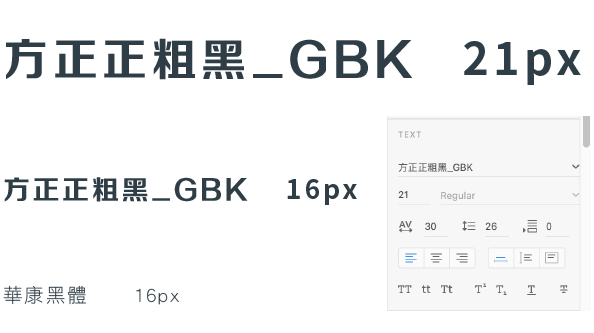

企業通訊系統
原型製作・UI設計
為客戶重新設計系統首頁架構
背景故事
為流行的文檔資料庫系統之一，作為群件系統，它利用自身強大的功能包含檔案處理、電子郵件、數據處理等，使其在企業辦公自動化方面的套用越來越廣。
網站目的
1. 將資料庫系統分門別類。
2. 集團聯絡資訊、信箱放置側邊欄，方便使用者快速。
3. 在畫面中將待簽清單與最新公告獨立出來方便個人處理事件。
視覺系統

字型設計
使用非襯線體的方正正粗黑_GBK，呈現輕鬆俏皮的風格，在內文使用華康黑體。
#C1ED81
#393E46
色彩計畫